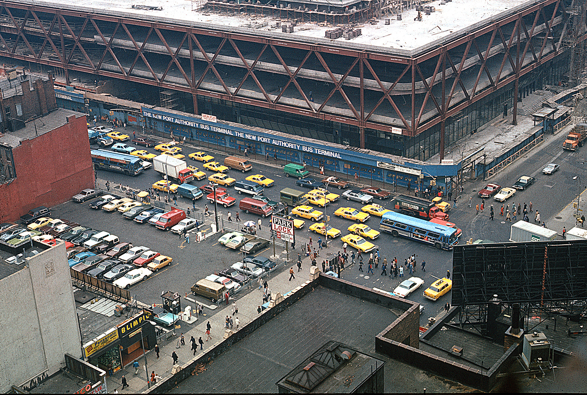
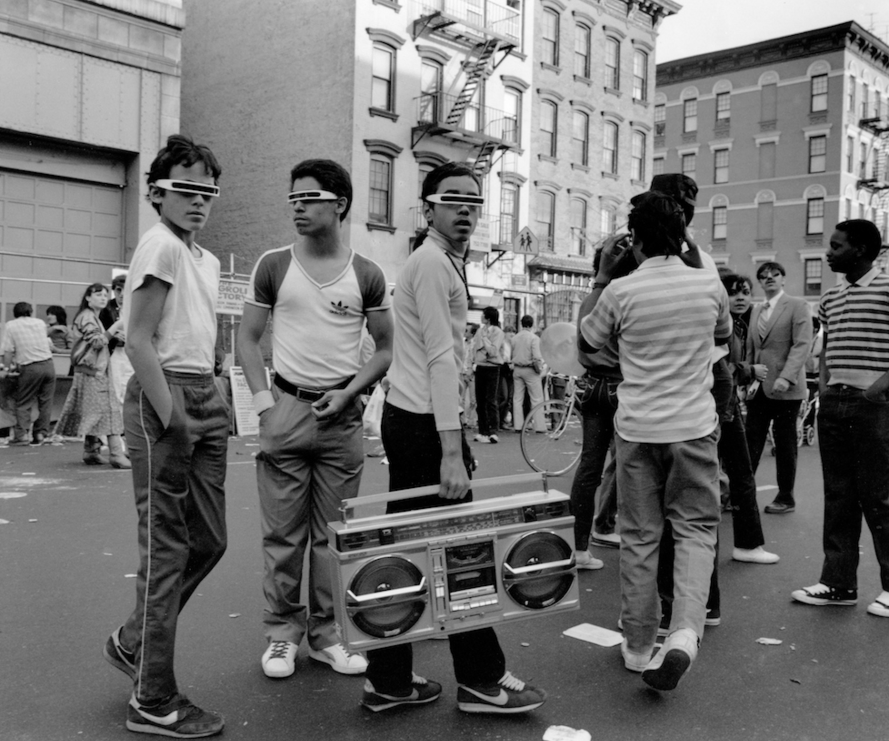
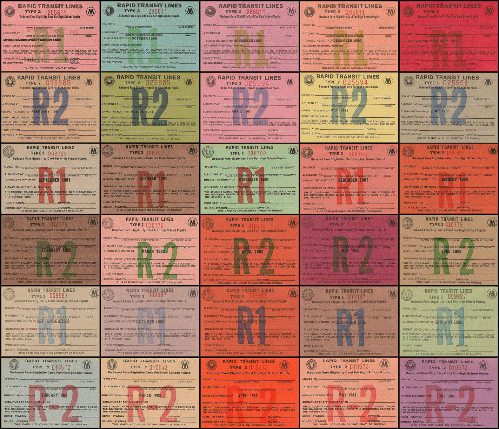
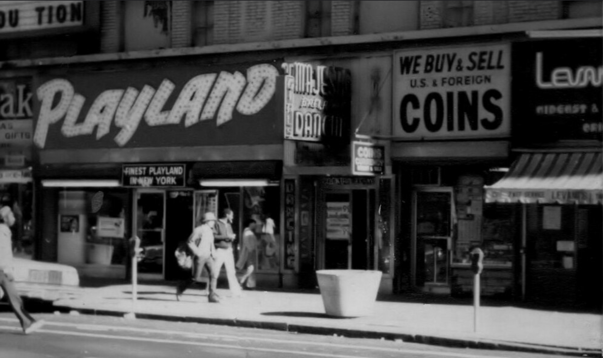
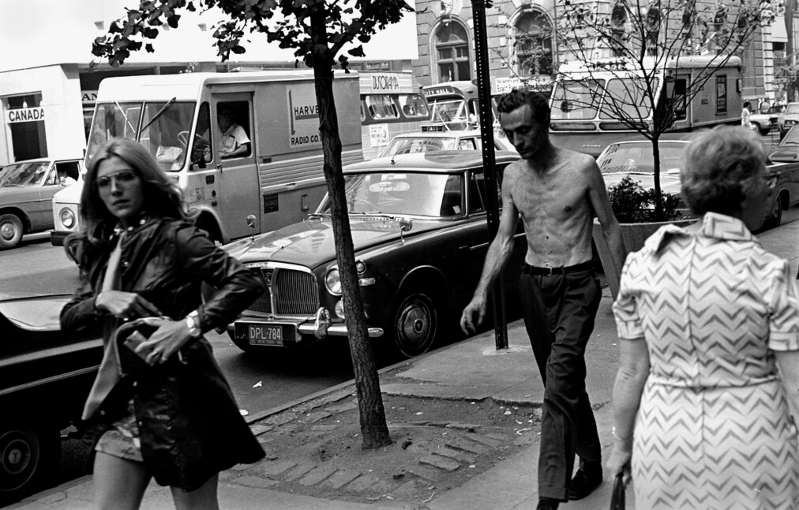
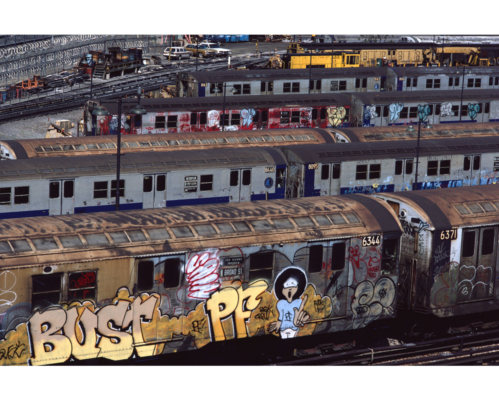
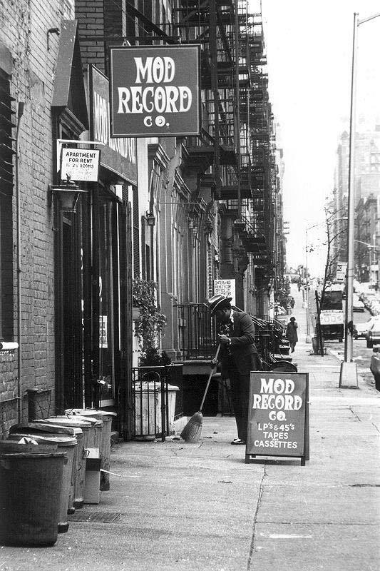

Somewhere in Chinatown, 1970s
Somewhere in Chinatown, 1970s

Port Authority, 1979
Central Park, as seen from the Plaza Hotel, 1979

103rd and Broadway, 1984

Rockin’ those shades, 1983

Outside Coliseum Books, 1981

Subway passes from the early 80s. They gave these out to students who had to commute long distances in the City. (Photo by Robert J. Fisch)

Times Square, 70s

Battery Park City landfill, West Side Highway, World Trade Center, 1975

Gay Pride Parade, 1977

Somewhere in NYC, 1977

Riverside Park, near the Soldiers and Sailors Monument, 1985

View from the Broadway Junction Elevated Station of the L train, Brooklyn, 1983

Little girl amidst the graffiti, 1986

Stairway at Intervale Ave IRT Station, South Bronx, 1986

View along Broadway from Sumpter St., Brooklyn, 1991

Mod Record Co., upper East side 1970s